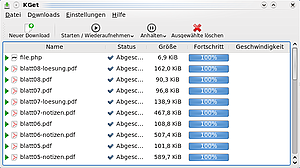
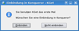

KGet
Dieser Artikel wurde für die folgenden Ubuntu-Versionen getestet:
Ubuntu 16.04 Xenial Xerus
Zum Verständnis dieses Artikels sind folgende Seiten hilfreich:
KGet  ist der Download-Manager der Desktop-Umgebung KDE. Mit KGet lassen sich Downloads komfortabel verwalten: man kann sie beliebig starten, anhalten und wiederaufnehmen. Während des Downloads zeigt KGet auf Wunsch die geschätzte Restdauer des Vorgangs, wieviele Megabyte Daten bereits übertragen wurden oder weitere Informationen an.
ist der Download-Manager der Desktop-Umgebung KDE. Mit KGet lassen sich Downloads komfortabel verwalten: man kann sie beliebig starten, anhalten und wiederaufnehmen. Während des Downloads zeigt KGet auf Wunsch die geschätzte Restdauer des Vorgangs, wieviele Megabyte Daten bereits übertragen wurden oder weitere Informationen an.
Des Weiteren kann KGet in Konqueror eingebunden werden, um dort eine Übersicht und Download-Auswahl über alle Links der Webseite zu geben. Dies geschieht dann über einen Menüpunkt (siehe unten). Man kann KGet aber auch ein Zielfeld anzeigen lassen, auf das von beliebiger Stelle in KDE aus Dateien gezogen werden können, damit diese mit KGet heruntergeladen werden.
Installation¶
 Unter Kubuntu ist KGet bereits standardmäßig installiert. Man kann es aber, wenn dem doch nicht so ist, durch folgendes Paket installieren:
kget (ab Ubuntu 14.04 in universe)
 mit apturl
mit apturl
Paketliste zum Kopieren:
sudo apt-get install kget
sudo aptitude install kget
Verwendung¶
 Wenn man KGet das erste Mal startet, bekommt man die Frage, ob man KGet in den Konqueror integrieren möchte. Sobald man die Frage beantwortet hat, steht KGet im Systembereich der Kontrollleiste zur Verfügung.
Wenn man einen Download im Konqueror startet, wird er direkt an KGet weiter gereicht. Wenn nicht anders eingestellt, startet wie bei einem Download ohne KGet zuerst der "Speichern unter.." Dialog. Anschließend wird der Download in die KGet-Warteschleife eingereiht. Neue Downloads lassen sich auch direkt primär einbinden.
Zielfeld¶
Zusätzlich wird ein "Downloadpfeil" angezeigt, das sogenannte Zielfeld. Dies ist ein großes KGet-Icon auf dem Bildschirm. Zieht man eine Datei, die man herunterladen möchte, auf den Pfeil, so öffnet sich automatisch KGet und man kann die Downloadoptionen etc. wählen. Das Zielfeld kann beliebig auf dem Bildschirm positioniert werden. Somit kann man die Drag_and_Drop Funktion für KGet benutzen.
Das Zielfeld ist standardmäßig aktiviert, kann ansonsten in KGet über "Einstellungen -> Erscheinungsbild -> Zielfeld anzeigen" aktiviert werden. Entfernen kann man das Zielfeld auch, indem man mit  darauf klickt und den Haken vor "Zielfeld anzeigen" entfernt.
darauf klickt und den Haken vor "Zielfeld anzeigen" entfernt.
Links¶
Downloadmanager KGet – Transferleistung
 - EasyLinux, 12/2004
- EasyLinux, 12/2004Download-Manager
 Programmübersicht
Programmübersicht
- Erstellt mit Inyoka
-
 2004 – 2017 ubuntuusers.de • Einige Rechte vorbehalten
2004 – 2017 ubuntuusers.de • Einige Rechte vorbehalten
Lizenz • Kontakt • Datenschutz • Impressum • Serverstatus -
Serverhousing gespendet von